Операционные системы. Часть 4 — «Настройка Arch Linux» 🚀¶
В прошлой части мы поставили Arch Linux через archinstall и благополучно добавили Windows в GRUB. Теперь самое вкусное — довести систему до ума: время, Hyprland, софт, шрифты, конфиги и прочая магия. Будут шутки, немного токсичности и много пользы. Поехали 😎
🧭 План работ¶
- Синхронизируем понимание времени между Windows и Linux (кто тут играет в клоунов).
- Приведём в порядок свежий Arch + Hyprland при помощи HyDE.
- Починим шелл fish и PATH, если что‑то пошло не так.
- Подтянем мои конфиги (можно и свои) и разберёмся со шрифтами.
- Покажу набор скринов/биндов — чтобы не тыкать наугад.
- Быстрый список базовых пакетов и «зачем это всё».
- Создадим SSH и GPG ключи под GitHub.
- Немного ритуалов обновления и финальные плюшки.
⏱️ Время: заставим Windows уважать UTC¶
По умолчанию Linux считает, что аппаратные часы (RTC/CMOS) хранят UTC, а локальное время = UTC + ваш часовой пояс + DST. Windows же живёт в параллельной вселенной и думает, что RTC — уже локальное время. В итоге при перезагрузках часы «плывут».
Я считаю, что RTC должен хранить только UTC. Всё остальное — забота ОС. Поэтому подкручиваем Windows.
Откройте cmd.exe от имени Администратора и вбейте:
reg add "HKLM\SYSTEM\CurrentControlSet\Control\TimeZoneInformation" ^
/v RealTimeIsUniversal /t REG_DWORD /d 1 /f
net stop w32time
net start w32time
w32tm /resync
Да‑да, сейчас мы правили реестр. «Круто сделано» (нет), но работает. После этого Windows перестаёт скакать с часами. Дышим ровно, идём дальше.
🧩 Первый вход в Arch + Hyprland (и гора warning’ов)¶
Грузимся в установленный Arch → логинимся → попадаем в дефолтный Hyprland. Сверху висят предупреждения — нормально, сейчас наведём красоту.
🌈 HyDE — быстрый красивый Wayland‑стол на базе Hyprland¶
HyDE — набор скриптов/конфигов для быстрых и аккуратных настроек: пакеты, темы (GTK/Qt), конфиги (SDDM, Waybar, и т. д.), фиксы для NVIDIA, интеграция с GRUB/systemd‑boot. Мне зашёл — минимально страдаешь и быстро получаешь годный рабочий стол.
Репозиторий: HyDE‑Project/HyDE. Поддержать ребят — святое дело.
Установка HyDE¶
Откройте терминал (Super/Win + Q) и выполните:
sudo pacman -S --needed git base-devel
git clone --depth 1 https://github.com/HyDE-Project/HyDE ~/HyDE
cd ~/HyDE/Scripts
./install.sh
В процессе скрипт задаст вопросы. Мои ответы / комментарии:
- Chaotic AUR — не ставим (мне не зашёл).
- AUR‑хелпер — беру yay (можно
paru). - Shell — fish (zsh мне не заходит, сорян).
- Шрифты — можно начать с
gnu-free-fonts(недостающее доставим позже). - SDDM theme — беру candy (если выбирали
lyна установке — может остатьсяly).
Смена шелла может прервать установку
Скрипт иногда падает на смене шелла: fish не добавлен в /etc/shells. Чиним руками и повторяем установку.
echo /usr/bin/fish | sudo tee -a /etc/shells
chsh -s /usr/bin/fish
После смены шелла перелогиньтесь и запустите ./install.sh ещё раз (и при необходимости ещё раз, пока всё не доустановится). Flatpak‑пакеты лучше не тянуть из инсталлятора, чтобы случайно не притащить тонну GNOME‑добра. Потом — по вкусу.
PATH после HyDE¶
Иногда пользовательские скрипты не попадают в PATH. Добавим в fish:
# добавляем пользовательские бинари и hyde-скрипты (путь проверьте у себя)
set -U fish_user_paths $HOME/.local/bin $HOME/.local/lib/hyde $fish_user_paths
Замените
$HOME/.local/lib/hydeна актуальный путь, если у вас другой.
🖼️ Скриншоты (для понимания «что должно получиться»)¶
На HyDE удобно делать скрины. Дефолтная система после прогона скрипта HyDE выглядит так:
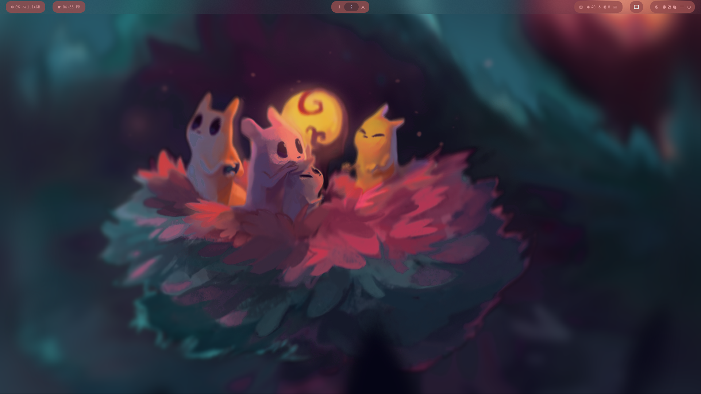 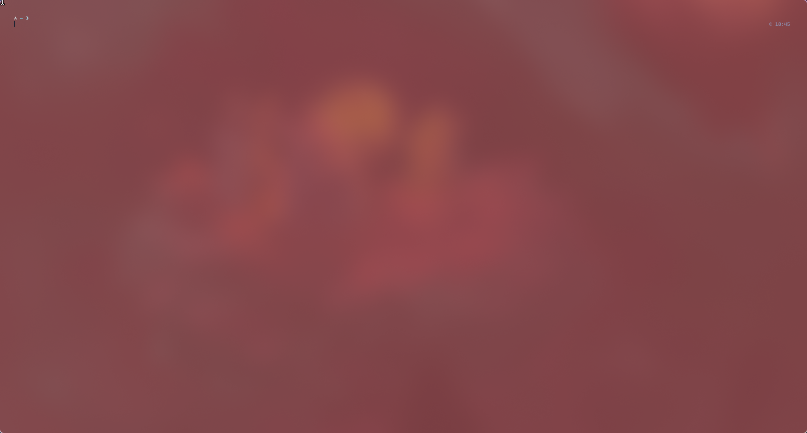 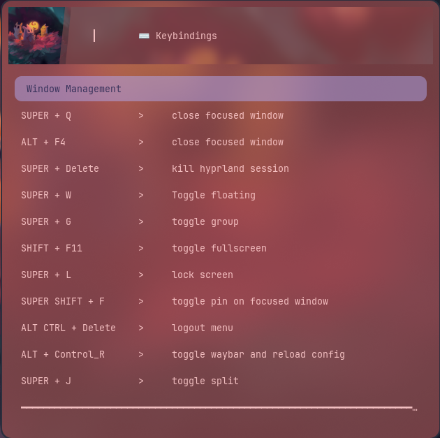 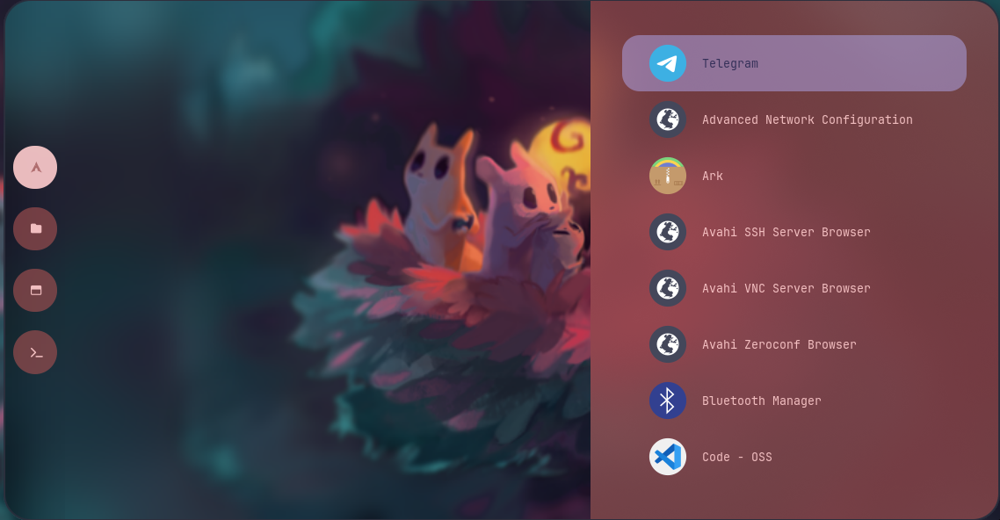 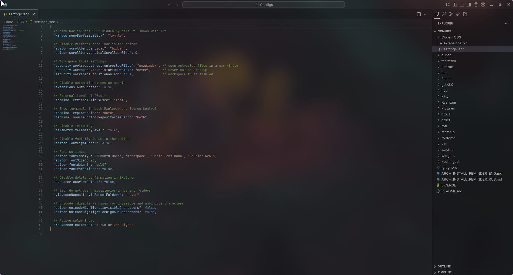
📦 Подтягиваем свои конфиги (или мои)¶
Хотите заменить дефолтные настройки? Тогда сперва поменяйте тему на Cmd + Shift + T.
У меня есть репозиторий с конфигами: можно брать целиком или по кускам. Репозиторий: zudaR107/Configs
mkdir -p ~/Sandbox
cd ~/Sandbox
git clone https://github.com/zudaR107/Configs
Важно: конфиги приложений живут в ~/.config. Перед копированием посмотрите содержимое и подправьте под себя — я старался комментировать, где нужно.
🅰️ Шрифты (системно)¶
# 1) кладём шрифты (ttf/otf/ttc, можно с подпапками)
sudo mkdir -p /usr/local/share/fonts/custom
sudo rsync -av --delete ~/path/to/repo/Fonts/ /usr/local/share/fonts/custom/
# 2) права
sudo find /usr/local/share/fonts/custom -type d -exec chmod 755 {} \;
sudo find /usr/local/share/fonts/custom -type f -exec chmod 644 {} \;
# 3) обновляем кэш
sudo fc-cache -f -v
⚙️ Code – OSS¶
- Откройте Settings → перенесите настройки из моего репо.
- Установите расширения из списка
extensions.
Станет красиво и удобно — Promise™ ✨
Ещё конфиги (кратко «что это вообще»)¶
- dunst — лёгкий демон уведомлений (X11/Wayland). Копируем
dunstrc. - fastfetch — супербыстрый «neofetch». Копируем
config.jsoncиlogo/Avatar.jpg. - fish — приятный интерактивный шелл. Конфиги в
~/.config/fish. - gtk-3.0 — темы/иконки/шрифты для GTK3.
- hypr — конфиги для Hyprland.
- kitty — быстрый GPU‑терминал.
- qt5ct / qt6ct — настройка тем/шрифтов для Qt5/Qt6 вне KDE.
- starship — быстрый кроссплатформенный промпт (TOML‑конфиг).
- waybar — панель статуса для Wayland.
- wlogout — красивое меню выхода / сна / перезагрузки.
- Firefox — профили / настройки / расширения — по вкусу.
После переноса конфигов перезагрузитесь (иногда пару раз — Wayland любит стабильность… иногда).
А вот уже моя «конфетка»:
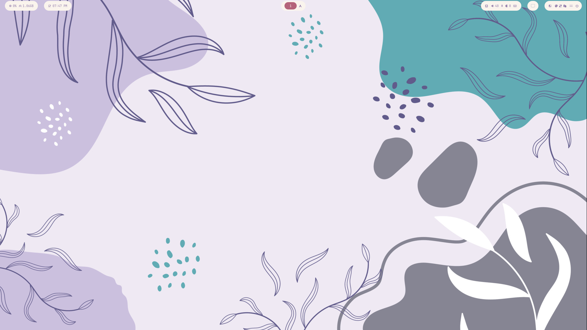
Рабочий стол
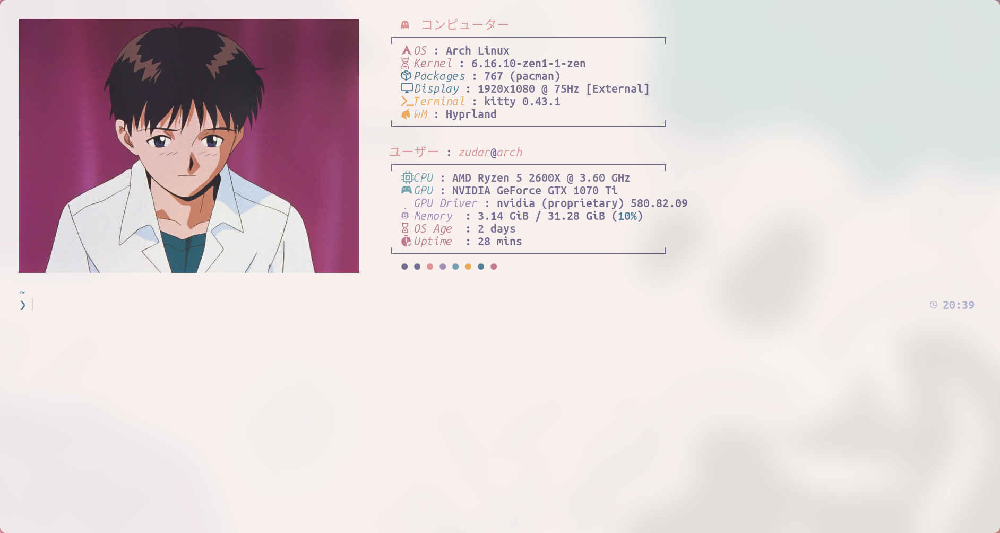
Консоль
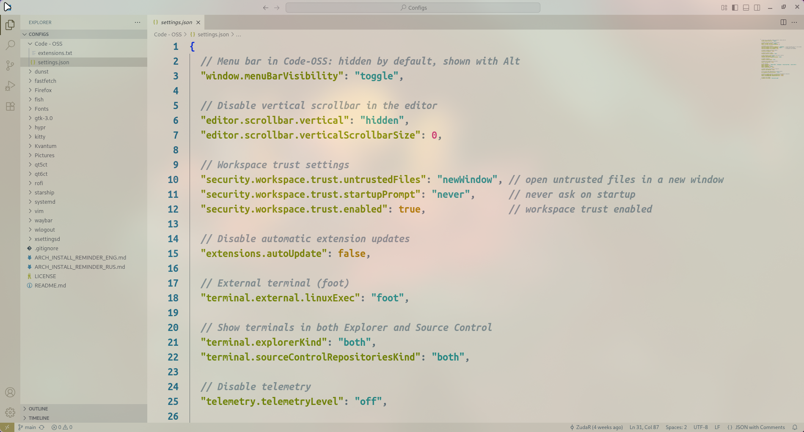
Code OSS
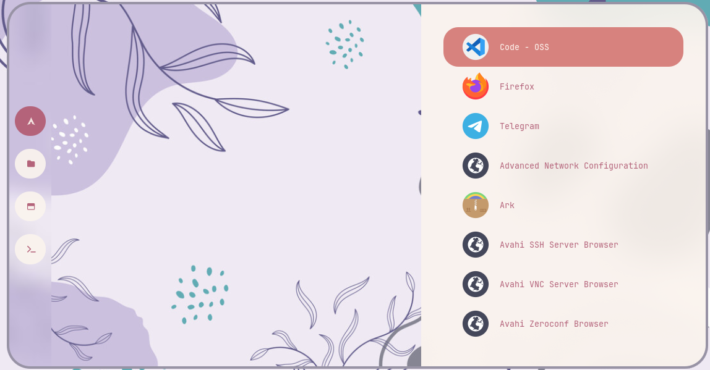
Rofi‑лаунчер приложений
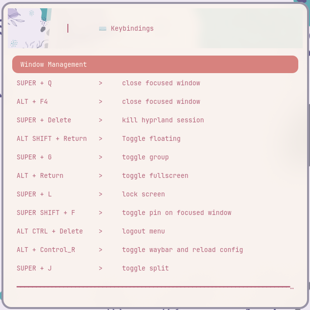
Бинды клавиш
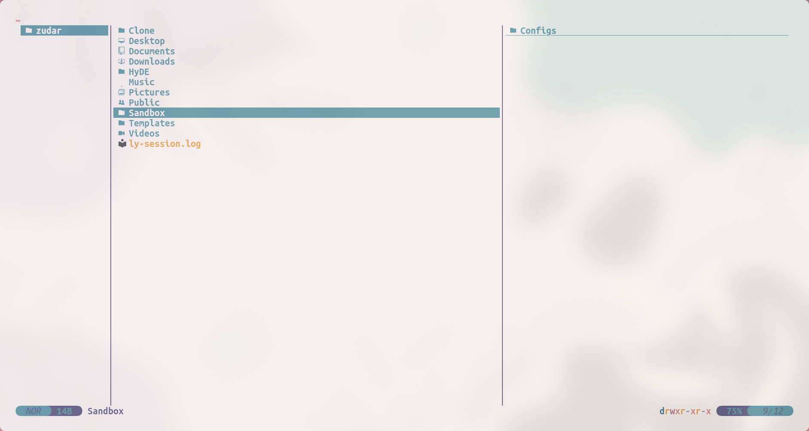
Yazi — консольный файловый менеджер
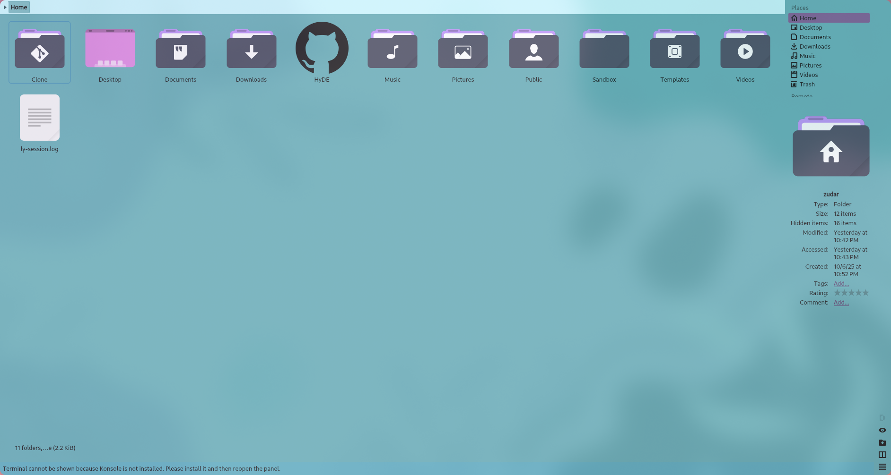
Dolphin — GUI файловый менеджер
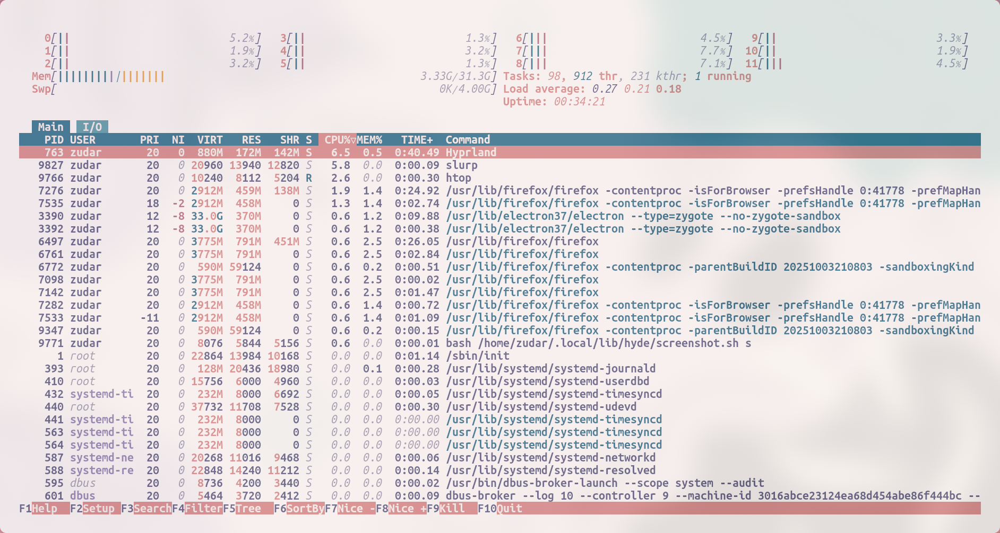
Потребление ресурсов (htop)
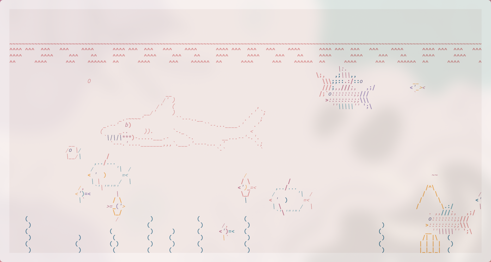
Аквариум с рыбками
(последнее — просто рофл, но милый 🐟)
⌨️ Hyprland — самые нужные хоткеи¶
Cmd = Win/Meta; MB1/MB2 = левая/правая кнопки мыши.
Окна¶
- Cmd + Q / Alt + F4 — закрыть окно.
- Alt + Enter — полноэкранный режим.
- Alt + Shift + Enter — переключить «плавающее» окно.
- Cmd + J — переключить сплит/деление контейнера.
- Cmd + Delete — выйти из Hyprland.
Фокус / перемещение / размер¶
- Cmd + ← / → / ↑ / ↓ — фокус на окно слева/справа/сверху/снизу.
- Cmd + Shift + ← / → / ↑ / ↓ — изменить размер (−/+ 30px).
- Cmd + Ctrl + Shift + ← / → / ↑ / ↓ — сдвинуть окно.
- Cmd + MB1 — удерживать и тащить окно.
- Cmd + MB2 — удерживать и менять размер.
Рабочие пространства¶
- Cmd + 1…0 — перейти на WS 1…10.
- Cmd + Shift + 1…0 — отправить окно на WS 1…10.
- Cmd + Ctrl + →/← — соседнее пространство.
- Cmd + S — показать/скрыть scratchpad.
Запуск приложений¶
- Cmd + Enter — терминал (
kitty). - Cmd + E — файловый менеджер yazi (у меня:
kitty+fish‑команда). - Cmd + C — редактор (
code). - Cmd + W — браузер (
firefox). - Cmd + Space — поиск приложений (rofi).
- Cmd + Tab — переключатель окон (rofi).
Скриншоты¶
- Cmd + P — выделенная область.
- Cmd + Ctrl + P — «заморозить» экран и выделить.
- Cmd + Alt + P — текущий монитор.
- Print — все мониторы.
Звук и яркость¶
- F10 / XF86AudioMute — mute.
- F11 / XF86AudioLowerVolume — тише.
- F12 / XF86AudioRaiseVolume — громче.
- XF86AudioMicMute — микрофон mute.
- XF86MonBrightnessUp/Down — яркость.
Полезное¶
- Cmd + L — блокировка экрана.
- Ctrl + Alt + Delete — меню выхода.
- Alt + K — переключить раскладку.
🧺 База пакетов: что поставить и зачем¶
Пример ниже — как ставить из репозиториев. Пакет меняете — смысл тот же.
sudo pacman -S zip
Краткие пояснения:
- zip / unzip — архивы ZIP (
zip,unzip). - unarchiver —
unar/lsarдля кучи форматов (RAR / 7z / Tar‑XZ и т. д.). - pwgen — генератор паролей в терминале.
- onlyoffice — офис. Из AUR чаще ставят
onlyoffice-bin. - jlink — тулзы SEGGER J‑Link (прошивка / отладка ARM).
- cmake — генератор проектов / система сборки.
- qmicroz — библиотека «Zip/qmicroz» для QtCreator (для работы с архивами) — собираем из исходников, репозиторий господина разработчика: artemvlas/qmicroz
- less — пейджер. Git без него ворчит.
- gnupg — GPG (подписи/шифрование),
- pinentry-gtk или pinentry-qt — ввод пароля для GPG.
- stm32cubemx — берём с официального сайта ST.
- «три буквы» — ставим с сайта, через прокси, как обычно 🙃
Полезные команды:
# установлен ли пакет?
pacman -Q zip
# поиск в репозиториях
pacman -Ss unarchiver
# версии бинарей (если в PATH)
unar -v || true
cmake --version || true
🔑 SSH и 🔏 GPG под GitHub¶
SSH (fish‑friendly)¶
В fish иногда нет hostname (зависит от набора пакетов). Возьмём надёжный вариант:
# 1) комментарий для ключа: host + год
set -l HOSTNAME_SAFE (cat /etc/hostname 2>/dev/null; or uname -n)
set -l COMMENT "github-$HOSTNAME_SAFE-"(date +%Y)
# 2) генерим ключ
ssh-keygen -t ed25519 -C "$COMMENT" -f ~/.ssh/id_ed25519_github
# 3) агент + добавление ключа в сессию
eval (ssh-agent -c)
ssh-add ~/.ssh/id_ed25519_github
# 4) ssh-конфиг под GitHub
mkdir -p ~/.ssh && chmod 700 ~/.ssh
printf 'Host github.com\n HostName github.com\n User git\n IdentityFile %s\n IdentitiesOnly yes\n AddKeysToAgent yes\n' ~/.ssh/id_ed25519_github >> ~/.ssh/config
chmod 600 ~/.ssh/config
# 5) показать публичный ключ (скопируйте в GitHub → Settings → SSH and GPG keys)
cat ~/.ssh/id_ed25519_github.pub
# 6) тест соединения
ssh -T git@github.com
GPG¶
sudo pacman -S gnupg pinentry-gtk # или pinentry-qt
# 1) быстрый ключ Ed25519 (только подпись), срок 1 год (0 = бессрочный)
gpg --quick-generate-key "Your Name <you@example.com>" ed25519 sign 1y
# 2) найдём KEYID
gpg --list-secret-keys --keyid-format=long
# 3) экспорт публичного ключа (скопируйте в GitHub → New GPG key)
gpg --armor --export YYYYYYYYYYYYYYYY
# 4) настройка git
git config --global user.name "Your Name"
git config --global user.email "you@example.com"
git config --global user.signingkey YYYYYYYYYYYYYYYY
git config --global commit.gpgsign true
git config --global tag.gpgSign true
git config --global gpg.program gpg
🔄 Обновления и финалочка¶
Обновляем систему (и делаем это регулярно, да):
sudo pacman -Syu
Rolling‑release — это не шутка
Arch и Hyprland обновляются часто. Иногда прилетает боль. Варианты: ставить LTS‑ядро, реже обновляться (с риском копить проблемы) или — лучший путь — решать возникающие ошибки. Плюс, читать новости / чанжлоги.
🏁 Что получилось¶
Мы приручили время (UTC рулит), накатили HyDE, подправили шелл / PATH, переехали с конфигами, настроили шрифты, горячие клавиши и поставили базовый софт. А ещё — подготовили SSH/GPG для коммитов в светлое будущее 🖤
Первый раз это может занять 1–2 полных дня (been there). Сейчас у меня уходит ~3 часа на чистовую настройку. Не бойся Арча — и он тебя отблагодарит! 🐧✨
Дальше будет серия теоретических статей по основам операционных систем (и не только). Stay tuned 😉